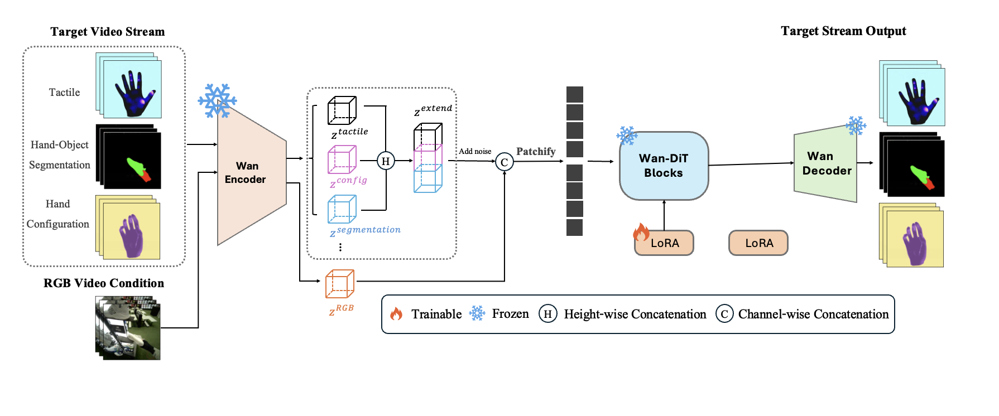

GeneratedGT
Tactile Synthesis
from Repurposed Video Diffusion
As part of my research at Johns Hopkins University, I explored a way to scale tactile data by predicting it from the much larger supply of first-person videos. Tactile measurements require specialized sensors, while videos of hands interacting with objects are abundant. Because pretrained video generators learn patterns of physical interaction from video, we tested whether one could be adapted to predict tactile pressure. We fine-tuned the model on RGB videos paired with tactile measurements, then used RGB alone to generate pressure maps over time. We also extended the model to jointly predict hand pose and hand–object segmentation. I was supervised by Dr. Anand Bhattad, Dr. Homanga Bharadhwaj, and Dr. Gregory Hager.
GeneratedGT
OpenTouch joint prediction
Method overview
Joint generation of tactile, hand configuration, and hand–object segmentation from RGB video.
We fine-tuned Wan2.1-Fun-Control with LoRA while keeping its base weights frozen. The model learns from paired RGB video and tactile measurements, then predicts tactile pressure maps from RGB alone. We also explored jointly predicting hand configuration and hand–object segmentation.

Examples
Held-out OpenTouch
Tactile activity is rendered on a static hand. Brighter regions indicate greater tactile activity.
Choose an interaction10 sequences
Joint Prediction
Four stitched examples showing RGB video alongside the predicted output streams.
GeneratedGT
GeneratedGT
GeneratedGT
GeneratedGT
Two Hands Generation
EgoTouch examples with left- and right-hand tactile predictions.
GeneratedGT
GeneratedGT
GeneratedGT
GeneratedGT
Over- and underprediction
Compare generated tactile with ground truth and inspect where they differ.
Red: generated tactile overpredictsBlue: generated tactile underpredicts
Swipe each video sideways to see the difference maps.